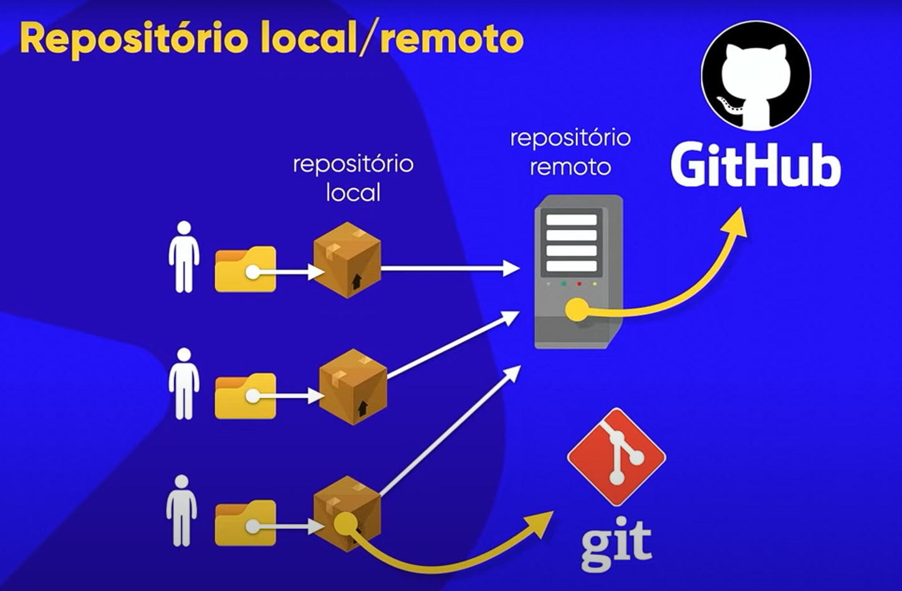

Conheça os repositórios

Conheça o Git e GitHub, repositórios onde podemos armazenar nossos arquivos, gerenciando versões do site, equipes de desenvolvimento, além de um back-up à prova de falhas.
Nestes repositórios, podemos transferir e compartilhar arquivos de nosso computador para um servidor, podemos fazer uma comparação de arquivos, uma completa atualização de um site, além de permitir um trabalho em conjunto de uma equipe.